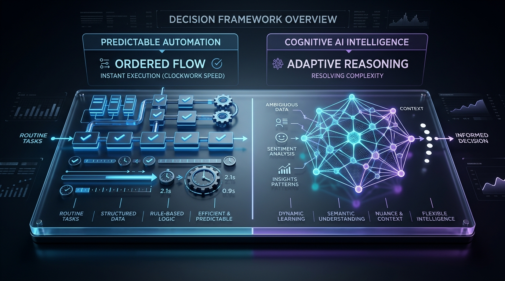
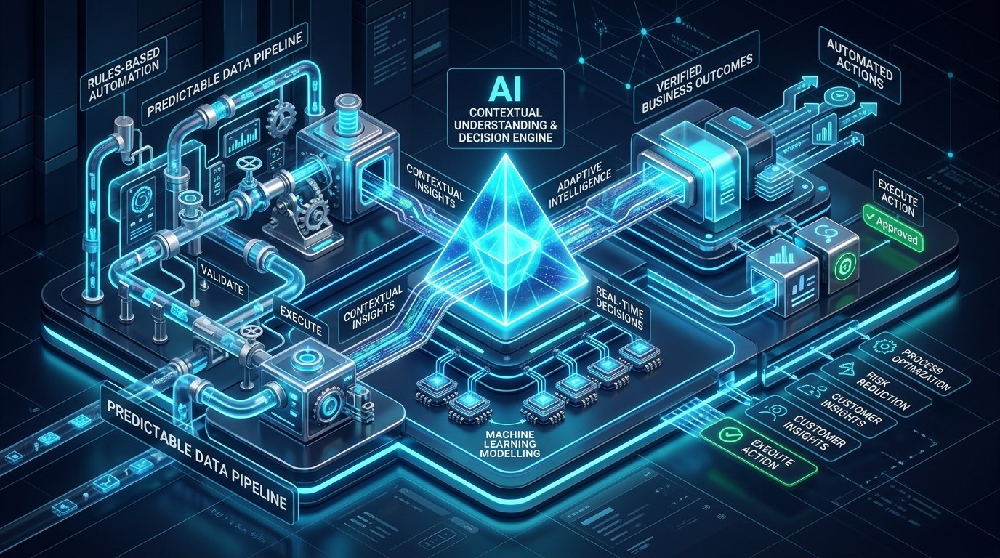

AI is being added to almost every business process.
Customer support. Finance. Sales. Operations. Reporting.
But there is a fundamental problem with the way many businesses approach it. They start by asking:
“Where can we add AI?”
That sounds innovative. But it is not always the right question.
If a workflow already follows the same trigger, the same steps, and the same outcome every single time, adding AI may introduce complexity where none is needed.
The smarter question is:
“Where does intelligence actually improve the workflow?”
Table of Contents
1. Not Every Business Problem Needs AI
Consider a simple, routine customer request:
“I forgot my password.”
The process is predictable. The system already knows what to do:
There is no real decision to make. The instructions are predefined. The expected outcome is clear. The workflow already knows what happens next.
So why introduce a heavy AI model to interpret and generate an ad-hoc response?
A rules-based automation can execute this workflow consistently, instantly, and with zero hallucination risk. In deterministic workflows:
The goal isn't intelligence. The goal is consistency.
2. The Question That Separates Automation From AI
When evaluating any operational business process, ask two fundamental questions:
- The same trigger?
- The same steps?
- The same expected outcome?
This gives businesses a simple, actionable decision framework:

Figure 2.0: The Decision Framework Matrix — mapping predictable execution vs cognitive reasoning.
3. When AI Becomes Unnecessary
Consider a workflow that receives a standard request and performs a fixed sequence of actions.
If AI has to:
...for something that already follows predefined rules, you are using expensive cognitive intelligence where the process doesn't require it.
The key question is not whether AI can perform the task.
It is whether AI needs to perform the task.
If the workflow already knows what to do, reliable automation is enough. AI should have a clear job. And that job should involve something the workflow cannot reliably determine through predefined rules alone.
4. Now Change the Scenario (The Double-Billing Example)
Now, imagine a customer sends a completely different type of message:
- • Fully predictable request format
- • Clear predefined execution path
- • Solved cleanly with deterministic automation
- • Unstructured, multi-issue natural language
- • Involves discrepancies across multiple billing cycles
- • Requires semantic understanding and contextual lookup
Now the workflow has an entirely different problem. The message isn't neatly labelled. The details can vary wildly. The correct response depends on the surrounding context.
The system may need to determine:
- What actually happened? Decoupling customer emotion from factual events.
- What is the customer's real issue? Overcharge vs statement mismatch vs prior month lag.
- Which information matters? Filtering invoice IDs, timestamps, and payment gateway references.
- Which records need to be checked? Querying ERP, Stripe, and customer transaction logs.
- What response is appropriate? Crafting an accurate, personalized reconciliation response.
This is no longer simply:
It becomes a cognitive reasoning loop:
That is where AI becomes useful.
5. AI Should Handle the Uncertainty
This is the part businesses often overlook:
AI is valuable when the system has to deal with variation.
Consider another comparison in account access:
A predefined deterministic workflow handles it flawlessly in milliseconds.
Now the system has to understand the message and determine what is actually happening behind the scenes.
The technology required is different because the underlying problem is different.
The goal isn't to make every single workflow intelligent. The goal is to introduce intelligence where the workflow encounters uncertainty.
6. The Best Workflows May Use Both (Division of Responsibility)
This doesn't have to be an “AI versus automation” decision.
In many real-world enterprise workflows, the strongest architecture deliberately combines both into an orchestrated system.
- Receive the inbound request
- Retrieve customer data from the CRM
- Update database records & systems
- Send transactional notifications
- Record the audit log and outcome
- Understand unstructured customer messages
- Classify the underlying issue intent
- Interpret ambiguous context & sentiment
- Extract relevant entities & references
- Help determine the appropriate next response

Figure 3.0: The Hybrid Workflow Architecture — deterministic data pipelines working alongside an AI contextual decision engine.
This creates a more deliberate, resilient division of responsibility:
“Automation handles what is known. AI helps with what needs to be understood.”
7. A Better Way to Design AI Workflows
Instead of starting with:
“Where can we add AI?”
Start with:
“Where does human-like judgement improve this workflow?”
That shift changes the entire conversation.
You stop looking for opportunities to merely insert AI tools. You start looking for decision points.
The Workflow Decision Checklist
Run any candidate workflow through these 5 diagnostic filters:
- Is the input predictable? If yes, automate it.
- Are the rules already known? If yes, automate them.
- Does the system need to interpret ambiguous information? Consider AI.
- Does the correct response depend on context? Consider AI.
- Can the expected outcome be defined in advance? If yes, a rules-based workflow may be enough.
This is the kind of practical thinking that turns AI from an expensive technology experiment into an indispensable operational tool.
8. The Smartest Workflow Isn't the One With the Most AI
More AI does not automatically mean a better workflow.
A workflow can be technically impressive, laden with multi-agent orchestration and large language models, and still be unnecessarily fragile, expensive, and complicated.
The objective should be simpler:
• If the process is known, automate it.
• If the answer depends on understanding, use AI.
• If the workflow contains both, combine them deliberately.
The smartest workflow isn't the one with AI everywhere. It's the one that uses AI where intelligence creates a genuine competitive advantage.
9. Build the Workflow Around the Problem, Not the Technology
Before introducing AI into an existing business process, map the workflow thoroughly.
Identify:
- What is predictable? Steps that require no human interpretation.
- What is repetitive? Tasks performed the exact same way dozens of times weekly.
- What requires interpretation? Free-form text, incoming emails, varied documents.
- Where does uncertainty appear? Ambiguous data, conflicting inputs, edge cases.
- Where does human judgement currently enter the process? Deciding policy exceptions, approvals, escalation.
Then assign the right technology to each part.
Because intelligent automation isn't about making every step intelligent. It's about making the right step intelligent.
The question isn't: “Where can we add AI?”
The better question is: “Where does intelligence create measurable value?”
That is where businesses can move from simply using AI to actually designing better operations.
10. How iKOREX Architects Intelligent Operations
At iKOREX, we help Australian enterprises and growing businesses avoid the trap of AI hype. We design and implement custom, end-to-end intelligent automation that respects this exact balance:
Need Help Evaluating AI for Your Workflows?
Book a complimentary 30-minute Workflow Audit with our engineering team in Melbourne. We will review your current processes and give you an objective architectural blueprint of where automation handles what is known, and where AI creates measurable advantage.
Schedule Your Free Workflow Audit →
Subin leads operations and product architecture at iKOREX, helping Australian businesses design robust, fail-safe automation architectures and deploy pragmatic AI solutions that generate measurable return on investment.